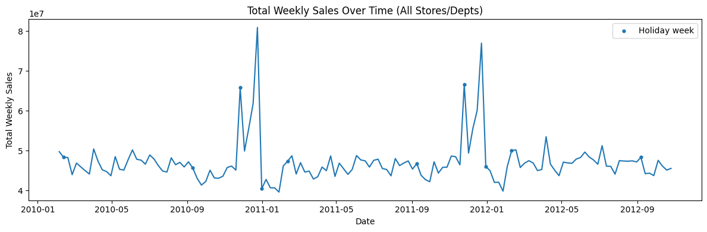
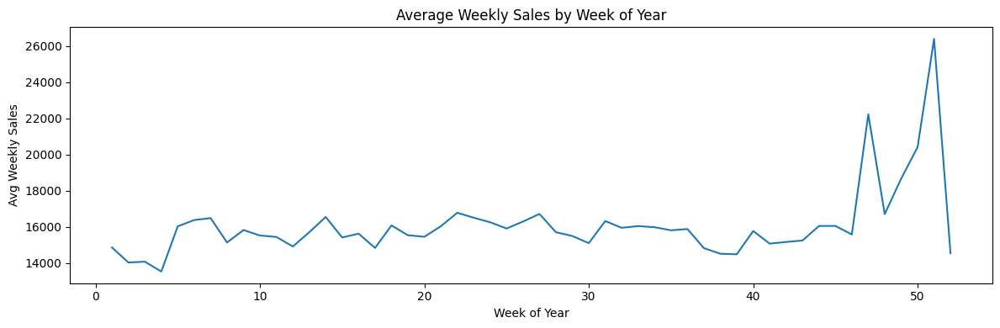
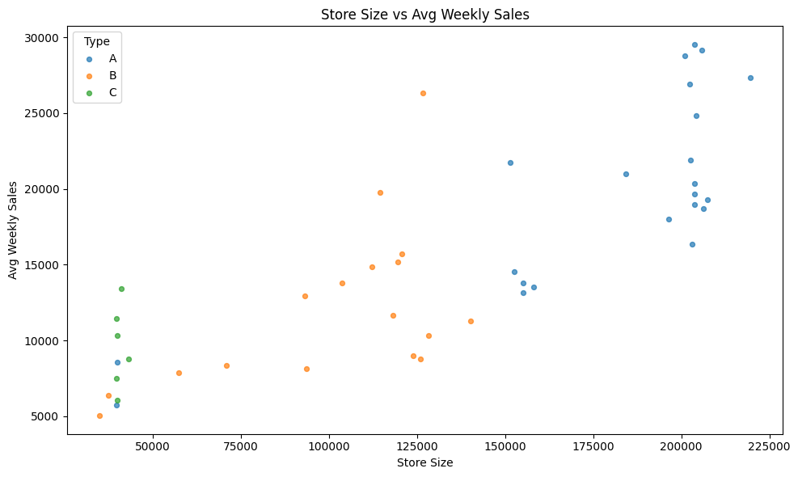
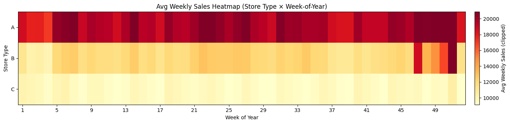
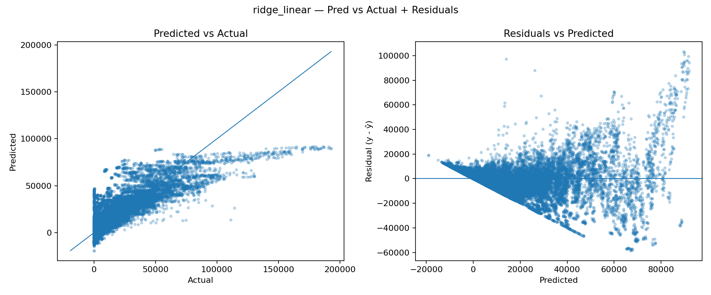
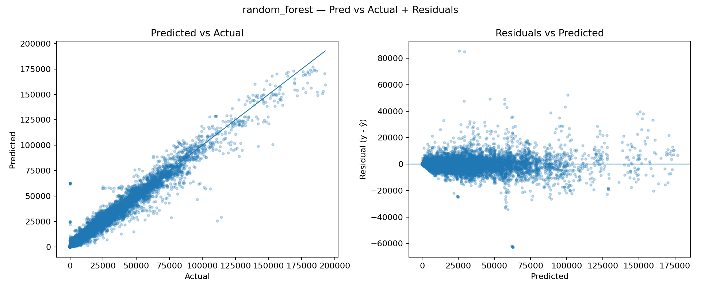

This project focuses on forecasting weekly retail sales using the Walmart Store Sales dataset. The main objective is to predict future sales from historical store and department level data, with an emphasis on improving WMAE performance while keeping experiments reproducible and easy to compare through MLflow-tracked models, convergence plots, and feature engineering iterations.
We start by joining the main training table (train.csv) with store metadata (stores.csv) and additional features (features.csv). The target is Weekly_Sales at the Store × Department × Week level, and the dataset includes a holiday flag (IsHoliday) and store attributes such as Type (A/B/C) and Size. To understand the global behavior, we aggregate Weekly_Sales across all stores and departments by week. Sales are fairly stable week-to-week, but there are sharp spikes at specific dates. Those spikes align with holiday weeks, confirming that holidays create large non-linear jumps in demand and justify using a holiday-weighted metric (WMAE) later. Next, we can look at average sales by week-of-year to see recurring patterns.


There is a clear seasonal structure throughout the year. The largest peaks occur in the final weeks (≈ weeks 47–52), consistent with major holiday shopping periods. This motivates feature engineering such as weekofyear, cyclical encodings (sin/cos), and lag/rolling history features which we can implement during training. Let us now examine hos store size relates to sales. Store Type A stores tend to be larger and achieve the highest average sales. Type B appears mid-sized with mid-range sales and type C clusters at smaller sizes and lower sales. This indicates store type and size are strong predictors and should be included directly in modeling. We can also compare seasonality patterns across store types using a heatmap of mean sales to confirm what we observed at the weekly level.


To establish a quick performance floor, we started with two simple baselines tracked in MLflow: a linear Ridge regression model and a Random Forest regressor. We first trained a Ridge model as a lightweight baseline. Since retail sales are driven by interactions (Store × Dept × seasonality × holidays), we expect the relationship to be strongly nonlinear, so Ridge is mainly useful as a sanity check. The Predicted vs Actual plot shows systematic underfitting (predictions compress into a narrow band). The residual plot reveals strong structure and heteroscedasticity (errors grow with the predicted value), indicating the model cannot represent the underlying patterns well.

Next, we tested a Random Forest to introduce nonlinearity and feature interactions without heavy tuning. The Predicted vs Actual scatter aligns much more closely with the diagonal, showing a significantly better fit. Residuals are more centered around zero and less structured, suggesting the model is capturing nonlinear effects that Ridge cannot. These baselines confirm that the sales signal is highly nonlinear and benefits from models that can capture interactions and regime changes (e.g., store type, department, seasonality, and holiday behavior). While Random Forest is a strong sanity-check improvement, the next logical step is to move to gradient-boosted trees (XGBoost/LightGBM), which typically outperform bagging methods on tabular problems and offer better control over bias/variance trade-offs and training dynamics.
